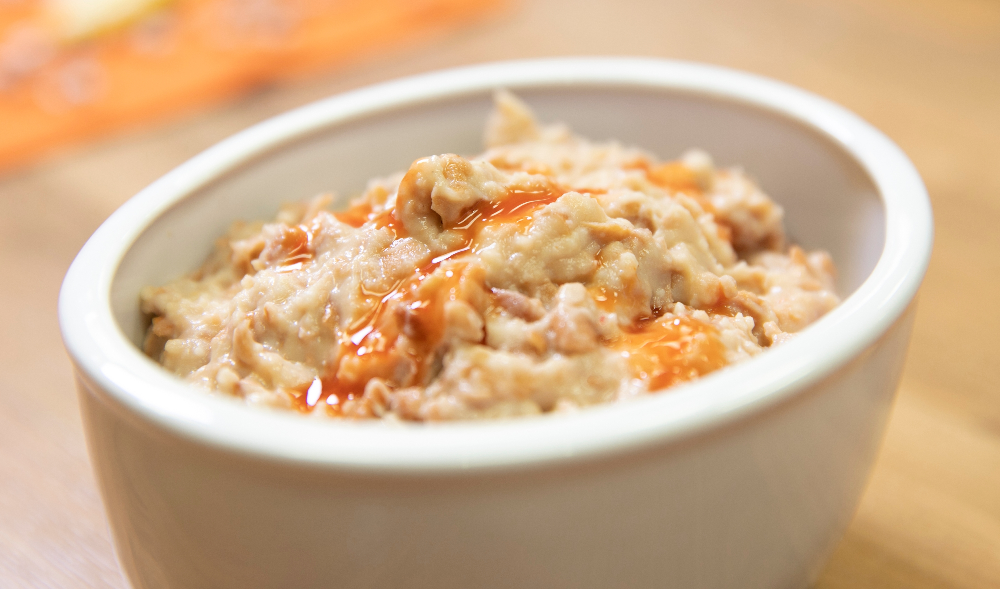

World's Best Oatmeal

Description
This is a yummy breakfast. If you like breakfast you'll probably like this one. It is tasty and has a lot of flavor.
Ingredients
Steps
- Select one cereal bowl
- Pour oatmeal into the bowl
- Pour cold water into the bowl
- Let rest for three days
- Eat and enjoy! The odor is normal.
Because of the long preparation time you may wish to prepare one bowl each day and eat one bowl each morning as
it becomes ready.